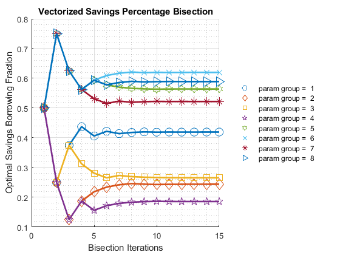
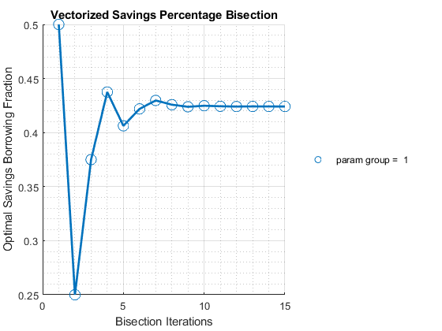
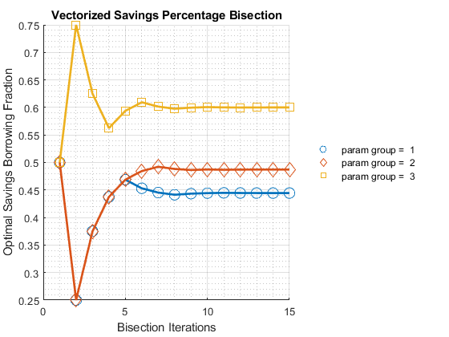
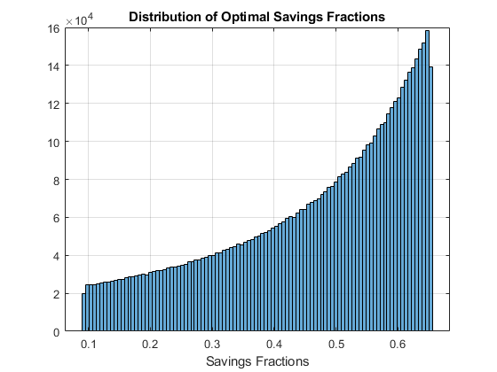
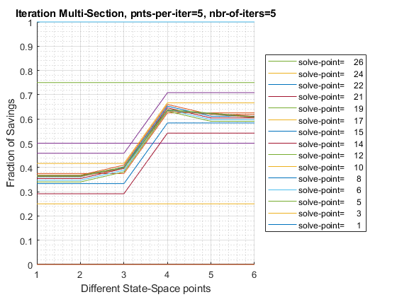
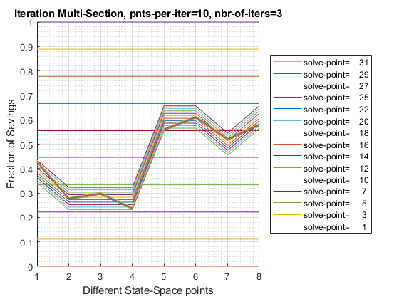
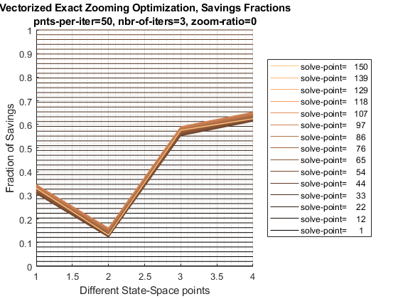
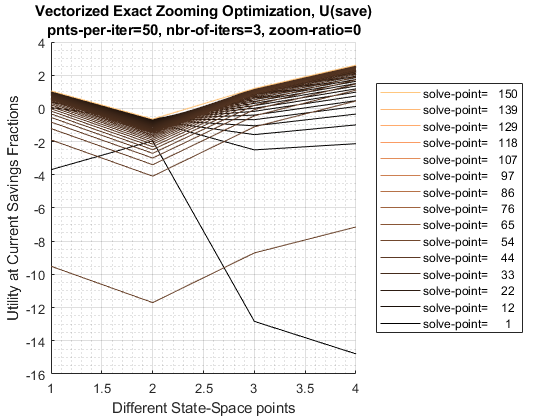
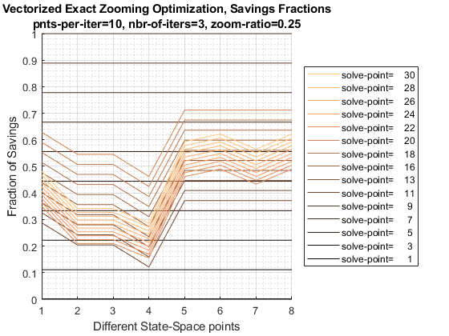
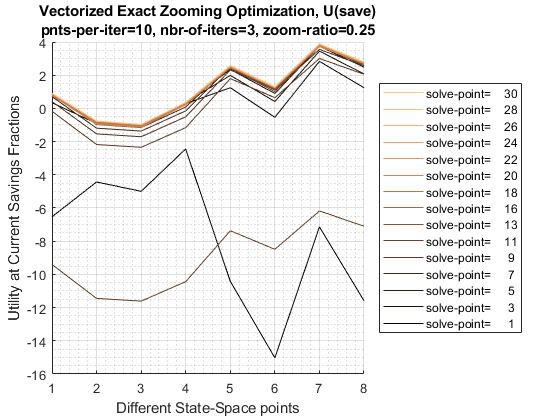

Chapter 5 Optimizers
5.1 faFF_OPTIM_BISEC_SAVEZRONE Derivative Bisection
Go back to fan’s MEconTools Toolbox (bookdown), Matlab Code Examples Repository (bookdown), or Math for Econ with Matlab Repository (bookdown).
This is the example vignette for function: ff_optim_bisec_savezrone from the MEconTools Package. This functions solves for optimal savings/borrowing level given an anonymous function that provides the derivative of a intertemporal savings problem. The function is solves over a grid of state-space elements that are embeded in the anonymous function. By default, it iterates over 15 iterations with bisection.
The vectorized and looped bisection savings problem rely on this function to solve for optimal savings choices:
States Grid + Continuous Exact Savings as Share of Cash-on-Hand Loop:ff_vfi_az_bisec_loop, high precision even with small grid
States Grid + Continuous Exact Savings as Share of Cash-on-Hand Vectorized: ff_vfi_az_bisec_vec, precision and speed
5.1.1 Test FF_OPTIM_BISEC_SAVEZRONE Defaults
Call the function with defaults, this solves concurrently for many state-space points’ optimization problems:
ff_optim_bisec_savezrone();
Elapsed time is 0.105423 seconds.
BISECT END: iteration=16, norm(ar_mid_fx)=0.00030653
vartype paramgroup2 paramgroup3 paramgroup4 paramgroup5 paramgroup6 paramgroup7 paramgroup8 paramgroup9
_______ ___________ ___________ ___________ ___________ ___________ ___________ ___________ ___________
a "init" 1e-05 1e-05 1e-05 1e-05 1e-05 1e-05 1e-05 1e-05
b "init" 0.99999 0.99999 0.99999 0.99999 0.99999 0.99999 0.99999 0.99999
f_a "init" 33802 40925 67047 15411 63263 1.9839e+05 25282 70686
f_b "init" -46789 -1.2672e+05 -1.8532e+05 -67518 -48900 -1.2164e+05 -23149 -49303
it1_fp "fatx" -0.25973 -1.7159 -2.3655 -1.0421 0.28726 1.535 0.042644 0.42766
it1_p "x" 0.5 0.5 0.5 0.5 0.5 0.5 0.5 0.5
it2_fp "fatx" 0.72822 -0.052631 0.21087 -0.28379 -1.1125 -2.2202 -0.58887 -1.0296
it2_p "x" 0.25 0.25 0.25 0.25 0.74999 0.74999 0.74999 0.74999
it3_fp "fatx" 0.15277 1.8256 -1.1773 0.46124 -0.29179 -0.069428 -0.21281 -0.18376
it3_p "x" 0.375 0.12501 0.375 0.12501 0.625 0.625 0.625 0.625
it4_fp "fatx" -0.059183 0.62299 -0.55013 -0.0090579 0.0069602 0.74664 -0.079677 0.12972
it4_p "x" 0.4375 0.18751 0.3125 0.18751 0.5625 0.5625 0.5625 0.5625
it5_fp "fatx" 0.044028 0.2488 -0.19454 0.1861 -0.13821 0.34715 -0.017964 -0.023106
it5_p "x" 0.40625 0.21876 0.28125 0.15626 0.59375 0.59375 0.53125 0.59375
it6_fp "fatx" -0.0080863 0.090981 0.00054305 0.081339 -0.064832 0.14171 0.012387 0.054017
it6_p "x" 0.42188 0.23438 0.26563 0.17188 0.57812 0.60937 0.51562 0.57812
it7_fp "fatx" 0.017822 0.017593 -0.098707 0.034591 -0.028768 0.036948 -0.0027658 0.015665
it7_p "x" 0.41406 0.24219 0.27344 0.17969 0.57031 0.61719 0.52344 0.58594
it8_fp "fatx" 0.0048335 -0.017893 -0.049532 0.012405 -0.010865 -0.016025 0.0048149 -0.003664
it8_p "x" 0.41797 0.2461 0.26954 0.1836 0.5664 0.62109 0.51953 0.58984
it9_fp "fatx" -0.0016347 -0.00024633 -0.02461 0.0015865 -0.0019434 0.010514 0.0010259 0.0060142
it9_p "x" 0.41992 0.24415 0.26758 0.18555 0.56445 0.61914 0.52148 0.58789
it10_fp "fatx" 0.0015973 0.0086488 -0.012063 -0.0037571 0.0025106 -0.0027422 -0.00086962 0.0011786
it10_p "x" 0.41895 0.24317 0.26661 0.18653 0.56348 0.62011 0.52246 0.58887
it11_fp "fatx" -1.9235e-05 0.0041952 -0.0057672 -0.0010907 0.00028416 0.0038891 7.8199e-05 -0.0012418
it11_p "x" 0.41944 0.24366 0.26612 0.18604 0.56396 0.61963 0.52197 0.58935
it12_fp "fatx" 0.00078889 0.0019729 -0.0026139 0.00024655 -0.0008295 0.00057428 -0.00039569 -3.1408e-05
it12_p "x" 0.41919 0.2439 0.26587 0.1858 0.56421 0.61987 0.52222 0.58911
it13_fp "fatx" 0.00038479 0.00086292 -0.0010359 -0.00042242 -0.00027263 -0.0010838 -0.00015874 0.00057363
it13_p "x" 0.41931 0.24402 0.26575 0.18592 0.56409 0.61999 0.52209 0.58899
it14_fp "fatx" 0.00018277 0.0003082 -0.00024654 -8.8022e-05 5.7721e-06 -0.00025469 -4.0269e-05 0.00027113
it14_p "x" 0.41937 0.24408 0.26569 0.18586 0.56402 0.61993 0.52203 0.58905
it15_fp "fatx" 8.1766e-05 3.0909e-05 0.00014822 7.9241e-05 -0.00013343 0.00015981 1.8966e-05 0.00011986
it15_p "x" 0.4194 0.24412 0.26566 0.18583 0.56406 0.6199 0.522 0.58908
it15_level "level" 0.56205 -0.070025 0.044431 -0.039424 1.0402 0.48151 2.1656 0.9076
exactSoluSaveborrFrac "exact" 0.41943 0.24412 0.26567 0.18584 0.56403 0.61991 0.52201 0.5891
exactSoluSaveborrLevel "exact" 0.56211 -0.070022 0.044438 -0.039403 1.0402 0.48152 2.1656 0.90765
exactSoluSaveborrFracGap "exact" 2.4705e-05 3.402e-06 1.1458e-05 1.4456e-05 2.9252e-05 1.1766e-05 9.771e-06 2.4181e-05
exactSoluSaveborrLevelGap "exact" 5.28e-05 2.6845e-06 6.1825e-06 2.1411e-05 5.9818e-05 9.6728e-06 4.2208e-05 4.9045e-05
----------------------------------------
xxxxxxxxxxxxxxxxxxxxxxxxxxxxxxxxxxxxxxxx
CONTAINER NAME: mp_container_map ND Array (Matrix etc)
xxxxxxxxxxxxxxxxxxxxxxxxxxxxxxxxxxxxxxxx
i idx ndim numel rowN colN sum mean std coefvari min max
_ ___ ____ _____ ____ ____ __________ __________ __________ ________ ___________ __________
ar_opti_foc_obj 1 1 2 8 1 8 0.00050535 6.3168e-05 9.4141e-05 1.4903 -0.00013343 0.00015981
ar_opti_save_frac 2 2 2 8 1 8 3.41 0.42626 0.17279 0.40536 0.18583 0.6199
xxx TABLE:ar_opti_foc_obj xxxxxxxxxxxxxxxxxx
c1 c2 c3 c4 c5 c6 c7 c8
__________ __________ __________ __________ ___________ __________ __________ __________
r1 8.1766e-05 3.0909e-05 0.00014822 7.9241e-05 -0.00013343 0.00015981 1.8966e-05 0.00011986
xxx TABLE:ar_opti_save_frac xxxxxxxxxxxxxxxxxx
c1 c2 c3 c4 c5 c6 c7 c8
______ _______ _______ _______ _______ ______ _____ _______
r1 0.4194 0.24412 0.26566 0.18583 0.56406 0.6199 0.522 0.589085.1.2 Test FF_OPTIM_BISEC_SAVEZRONE One Individual
Bisection for savings choice at one state:
% Generate the state-space and function
[fl_z1, fl_z2, fl_r, fl_beta] = deal(0.4730, 0.6252, 0.0839, 0.7365);
% ffi_intertemporal_max is a function in ff_optim_bisec_savezrone for testing
fc_deri_wth_uniroot = @(x) ffi_intertemporal_max(x, fl_z1, fl_z2, fl_r, fl_beta);
% Call Function
bl_verbose = true;
ff_optim_bisec_savezrone(fc_deri_wth_uniroot, bl_verbose);
BISECT END: iteration=16, norm(ar_mid_fx)=0.00016724
vartype paramgroup2
_______ ___________
a "init" 1e-05
b "init" 0.99999
f_a "init" 70155
f_b "init" -95255
it1_fp "fatx" -0.502
it1_p "x" 0.5
it2_fp "fatx" 1.5361
it2_p "x" 0.25
it3_fp "fatx" 0.34671
it3_p "x" 0.375
it4_fp "fatx" -0.089881
it4_p "x" 0.4375
it5_fp "fatx" 0.12259
it5_p "x" 0.40625
it6_fp "fatx" 0.015276
it6_p "x" 0.42188
it7_fp "fatx" -0.037529
it7_p "x" 0.42969
it8_fp "fatx" -0.011188
it8_p "x" 0.42578
it9_fp "fatx" 0.0020277
it9_p "x" 0.42383
it10_fp "fatx" -0.0045843
it10_p "x" 0.42481
it11_fp "fatx" -0.0012793
it11_p "x" 0.42432
it12_fp "fatx" 0.00037392
it12_p "x" 0.42407
it13_fp "fatx" -0.00045276
it13_p "x" 0.4242
it14_fp "fatx" -3.9436e-05
it14_p "x" 0.42413
it15_fp "fatx" 0.00016724
it15_p "x" 0.4241
it15_level "level" -0.13158
----------------------------------------
xxxxxxxxxxxxxxxxxxxxxxxxxxxxxxxxxxxxxxxx
CONTAINER NAME: mp_container_map Scalars
xxxxxxxxxxxxxxxxxxxxxxxxxxxxxxxxxxxxxxxx
i idx value
_ ___ __________
ar_opti_foc_obj 1 1 0.00016724
ar_opti_save_frac 2 2 0.42415.1.3 Test FF_OPTIM_BISEC_SAVEZRONE Six Individual States
Solve the two period intertemporal optimization problem with only 6 individual states:
% Generate the state-space and function
ar_z1 = [1,2,3]';
ar_z2 = [3,2,1]';
ar_r = [1.05, 1.50, 1.30]';
ar_beta = [0.80, 0.95, 1.50]';
mt_fc_inputs = [ar_z1, ar_z2, ar_r, ar_beta];
% ffi_intertemporal_max is a function in ff_optim_bisec_savezrone for testing
fc_deri_wth_uniroot = @(x) ffi_intertemporal_max(x, ar_z1, ar_z2, ar_r, ar_beta);
% Call Function
bl_verbose = true;
ff_optim_bisec_savezrone(fc_deri_wth_uniroot, bl_verbose);
BISECT END: iteration=16, norm(ar_mid_fx)=8.9847e-05
vartype paramgroup2 paramgroup3 paramgroup4
_______ ___________ ___________ ___________
a "init" 1e-05 1e-05 1e-05
b "init" 0.99999 0.99999 0.99999
f_a "init" 32475 33928 43671
f_b "init" -40594 -35714 -29113
it1_fp "fatx" -0.16238 -0.035714 0.29114
it1_p "x" 0.5 0.5 0.5
it2_fp "fatx" 0.75773 0.88092 -0.58225
it2_p "x" 0.25 0.25 0.74999
it3_fp "fatx" 0.21649 0.33333 -0.077629
it3_p "x" 0.375 0.375 0.625
it4_fp "fatx" 0.020615 0.14059 0.11091
it4_p "x" 0.4375 0.4375 0.5625
it5_fp "fatx" -0.07132 0.051539 0.018865
it5_p "x" 0.46875 0.46875 0.59375
it6_fp "fatx" -0.025599 0.0078193 -0.028659
it6_p "x" 0.45313 0.48438 0.60937
it7_fp "fatx" -0.0025711 -0.013955 -0.0047386
it7_p "x" 0.44531 0.49219 0.60156
it8_fp "fatx" 0.0090001 -0.0030715 0.0071001
it8_p "x" 0.44141 0.48828 0.59765
it9_fp "fatx" 0.0032093 0.0023727 0.0011903
it9_p "x" 0.44336 0.48633 0.59961
it10_fp "fatx" 0.00031783 -0.00034971 -0.0017717
it10_p "x" 0.44434 0.4873 0.60058
it11_fp "fatx" -0.0011269 0.0010114 -0.00029011
it11_p "x" 0.44483 0.48682 0.6001
it12_fp "fatx" -0.00040464 0.00033083 0.00045024
it12_p "x" 0.44458 0.48706 0.59985
it13_fp "fatx" -4.3425e-05 -9.4396e-06 8.0103e-05
it13_p "x" 0.44446 0.48718 0.59997
it14_fp "fatx" 0.0001372 0.0001607 -0.000105
it14_p "x" 0.4444 0.48712 0.60003
it15_fp "fatx" 4.6884e-05 7.5628e-05 -1.2444e-05
it15_p "x" 0.44443 0.48715 0.6
it15_level "level" -0.3686 0.56403 1.6261
----------------------------------------
xxxxxxxxxxxxxxxxxxxxxxxxxxxxxxxxxxxxxxxx
CONTAINER NAME: mp_container_map ND Array (Matrix etc)
xxxxxxxxxxxxxxxxxxxxxxxxxxxxxxxxxxxxxxxx
i idx ndim numel rowN colN sum mean std coefvari min max
_ ___ ____ _____ ____ ____ __________ __________ __________ ________ ___________ __________
ar_opti_foc_obj 1 1 2 3 1 3 0.00011007 3.6689e-05 4.4913e-05 1.2241 -1.2444e-05 7.5628e-05
ar_opti_save_frac 2 2 2 3 1 3 1.5316 0.51053 0.080379 0.15744 0.44443 0.6
xxx TABLE:ar_opti_foc_obj xxxxxxxxxxxxxxxxxx
c1 c2 c3
__________ __________ ___________
r1 4.6884e-05 7.5628e-05 -1.2444e-05
xxx TABLE:ar_opti_save_frac xxxxxxxxxxxxxxxxxx
c1 c2 c3
_______ _______ ___
r1 0.44443 0.48715 0.65.1.4 Test FF_OPTIM_BISEC_SAVEZRONE Speed
Test Speed doing 6.25 million bisections for a savings problem:
% Generate the state-space and function
rng(123);
it_draws = 6250000; % must be even number
ar_z1 = exp(rand([it_draws,1])*3-1.5);
ar_z2 = exp(rand([it_draws,1])*3-1.5);
ar_r = (rand(it_draws,1)*10.0);
ar_beta = [rand(round(it_draws/2),1)*0.9+0.1; rand(round(it_draws/2),1)*0.9+1];
% ffi_intertemporal_max is a function in ff_optim_bisec_savezrone for testing
fc_deri_wth_uniroot = @(x) ffi_intertemporal_max(x, ar_z1, ar_z2, ar_r, ar_beta);
% Call Function
bl_verbose = false;
bl_timer = true;
[ar_opti_save_frac, ar_opti_save_level] = ff_optim_bisec_savezrone(fc_deri_wth_uniroot, bl_verbose, bl_timer);
Elapsed time is 2.570982 seconds.
mp_container_map = containers.Map('KeyType','char', 'ValueType','any');
mp_container_map('ar_opti_save_frac') = ar_opti_save_frac;
mp_container_map('ar_opti_save_level') = ar_opti_save_level;
mp_container_map('ar_opti_save_frac_notnan') = ar_opti_save_frac(~isnan(ar_opti_save_frac));
ff_container_map_display(mp_container_map);
----------------------------------------
xxxxxxxxxxxxxxxxxxxxxxxxxxxxxxxxxxxxxxxx
CONTAINER NAME: mp_container_map ND Array (Matrix etc)
xxxxxxxxxxxxxxxxxxxxxxxxxxxxxxxxxxxxxxxx
i idx ndim numel rowN colN sum mean std coefvari min max
_ ___ ____ ________ ________ ____ __________ _______ _______ ________ _______ _______
ar_opti_save_frac 1 1 2 6.25e+06 6.25e+06 1 2.884e+06 0.46144 0.15306 0.33171 0.09092 0.65518
ar_opti_save_frac_notnan 2 2 2 6.25e+06 6.25e+06 1 2.884e+06 0.46144 0.15306 0.33171 0.09092 0.65518
ar_opti_save_level 3 3 2 6.25e+06 6.25e+06 1 2.9482e+06 0.47172 0.66667 1.4133 -3.9805 2.9221
figure();
histogram(ar_opti_save_frac(~isnan(ar_opti_save_frac)),100);
title('Distribution of Optimal Savings Fractions');
xlabel('Savings Fractions');
grid on;
5.1.5 Define Two Period Intertemporal FOC Log Utility No Shock
function [ar_deri_zero, ar_saveborr_level] = ffi_intertemporal_max(ar_saveborr_frac, z1, z2, r, beta)
ar_saveborr_level = ar_saveborr_frac.*(z1+z2./(1+r)) - z2./(1+r);
ar_deri_zero = 1./(ar_saveborr_level-z1) + (beta.*(r+1))./(z2 + ar_saveborr_level.*(r+1));
end5.2 FF_OPTIM_MLSEC_SAVEZRONE Derivative Multisection
Go back to fan’s MEconTools Toolbox (bookdown), Matlab Code Examples Repository (bookdown), or Math for Econ with Matlab Repository (bookdown).
This is the example vignette for function: ff_optim_mlsec_savezrone from the MEconTools Package. This functions solves for optimal savings/borrowing level given an anonymous function that provides the derivative of a intertemporal savings problem. This is a vectorized function solved with multi-section (multiple points bisection concurrently).
The vectorized and looped bisection savings problem rely on this function to solve for optimal savings choices:
States Grid + Continuous Exact Savings as Share of Cash-on-Hand Loop:ff_vfi_az_bisec_loop, high precision even with small grid
States Grid + Continuous Exact Savings as Share of Cash-on-Hand Vectorized: ff_vfi_az_bisec_vec, precision and speed
5.2.1 Test FF_OPTIM_MLSEC_SAVEZRONE One Individual
Bisection for savings choice at one state:
% Generate the state-space and function
[fl_z1, fl_z2, fl_r, fl_beta] = deal(0.4730, 0.6252, 0.0839, 0.7365);
% ffi_intertemporal_max is a function in ff_optim_mlsec_savezrone for testing
fc_deri_wth_uniroot = @(x) ffi_intertemporal_max(x, fl_z1, fl_z2, fl_r, fl_beta);
% Call Function
bl_verbose = false;
bl_timer = true;
% optimally borrowing given the parameters here
mp_mlsec_ctrlinfo = containers.Map('KeyType','char', 'ValueType','any');
mp_mlsec_ctrlinfo('it_mzoom_jnt_pnts') = 10;
mp_mlsec_ctrlinfo('it_mzoom_max_iter') = 4;
[fl_opti_save_frac, fl_opti_save_level] = ...
ff_optim_mlsec_savezrone(fc_deri_wth_uniroot, bl_verbose, bl_timer, mp_mlsec_ctrlinfo)
Elapsed time is 0.011265 seconds.
fl_opti_save_frac = 0.4241
fl_opti_save_level = -0.13165.2.2 Test FF_OPTIM_MLSEC_SAVEZRONE 5 Individuals 5 Iterations 5 Points Per Iteration
5 grid points per iteration, and 5 iterations.
% Generate the state-space and function
rng(123);
it_draws = 6; % must be even number
ar_z1 = exp(rand([it_draws,1])*3-1.5);
ar_z2 = exp(rand([it_draws,1])*3-1.5);
ar_r = (rand(it_draws,1)*10.0);
ar_beta = [rand(round(it_draws/2),1)*0.9+0.1; rand(round(it_draws/2),1)*0.9+1];
fc_deri_wth_uniroot = @(x) ffi_intertemporal_max(x, ar_z1, ar_z2, ar_r, ar_beta);
% Call Function
bl_verbose = true;
bl_timer = true;
mp_mlsec_ctrlinfo = containers.Map('KeyType','char', 'ValueType','any');
mp_mlsec_ctrlinfo('it_mlsect_jnt_pnts') = 5;
mp_mlsec_ctrlinfo('it_mlsect_max_iter') = 5;
ff_optim_mlsec_savezrone(fc_deri_wth_uniroot, bl_verbose, bl_timer, mp_mlsec_ctrlinfo);
iter cl_row_names_a Var1 Var2 Var3 Var4 Var5 Var6
____ ______________ _______ _______ _______ _______ _______ _______
0 "point=1" 1e-05 1e-05 1e-05 1e-05 1e-05 1e-05
1 "point=1" 1e-05 1e-05 1e-05 1e-05 1e-05 1e-05
1 "point=2" 0.25001 0.25001 0.25001 0.25001 0.25001 0.25001
1 "point=3" 0.5 0.5 0.5 0.5 0.5 0.5
1 "point=4" 0.75 0.75 0.75 0.75 0.75 0.75
1 "point=5" 0.99999 0.99999 0.99999 0.99999 0.99999 0.99999
2 "point=1" 0.29167 0.29167 0.29167 0.54167 0.54167 0.54167
2 "point=2" 0.33334 0.33334 0.33334 0.58333 0.58333 0.58333
2 "point=3" 0.375 0.375 0.375 0.625 0.625 0.625
2 "point=4" 0.41667 0.41667 0.41667 0.66666 0.66666 0.66666
2 "point=5" 0.45833 0.45833 0.45833 0.70833 0.70833 0.70833
3 "point=1" 0.34028 0.34028 0.38195 0.63194 0.59028 0.59028
3 "point=2" 0.34723 0.34723 0.38889 0.63889 0.59722 0.59722
3 "point=3" 0.35417 0.35417 0.39584 0.64583 0.60416 0.60416
3 "point=4" 0.36111 0.36111 0.40278 0.65277 0.61111 0.61111
3 "point=5" 0.36806 0.36806 0.40972 0.65972 0.61805 0.61805
4 "point=1" 0.36227 0.36227 0.39699 0.6331 0.61921 0.60532
4 "point=2" 0.36343 0.36343 0.39815 0.63426 0.62037 0.60648
4 "point=3" 0.36459 0.36459 0.39931 0.63541 0.62153 0.60764
4 "point=4" 0.36574 0.36574 0.40046 0.63657 0.62268 0.60879
4 "point=5" 0.3669 0.3669 0.40162 0.63773 0.62384 0.60995
5 "point=1" 0.36594 0.36594 0.40066 0.63792 0.62288 0.60783
5 "point=2" 0.36613 0.36613 0.40085 0.63811 0.62307 0.60802
5 "point=3" 0.36632 0.36632 0.40104 0.63831 0.62326 0.60822
5 "point=4" 0.36652 0.36652 0.40124 0.6385 0.62345 0.60841
5 "point=5" 0.36671 0.36671 0.40143 0.63869 0.62365 0.6086
Elapsed time is 0.495996 seconds.
----------------------------------------
xxxxxxxxxxxxxxxxxxxxxxxxxxxxxxxxxxxxxxxx
CONTAINER NAME: mp_container_map ND Array (Matrix etc)
xxxxxxxxxxxxxxxxxxxxxxxxxxxxxxxxxxxxxxxx
i idx ndim numel rowN colN sum mean std coefvari min max
_ ___ ____ _____ ____ ____ ___________ ___________ __________ ________ ___________ __________
ar_opti_foc_obj 1 1 2 6 6 1 -0.00037648 -6.2746e-05 0.00042601 -6.7894 -0.00067107 0.00055875
ar_opti_save_frac 2 2 2 6 6 1 3.0037 0.50061 0.13506 0.26979 0.36642 0.63821
xxx TABLE:ar_opti_foc_obj xxxxxxxxxxxxxxxxxx
c1
___________
r1 7.0837e-05
r2 -0.0002782
r3 0.00017713
r4 0.00055875
r5 -0.00023392
r6 -0.00067107
xxx TABLE:ar_opti_save_frac xxxxxxxxxxxxxxxxxx
c1
_______
r1 0.36642
r2 0.36661
r3 0.40153
r4 0.63821
r5 0.62297
r6 0.607935.2.3 Test FF_OPTIM_MLSEC_SAVEZRONE 8 Individuals 3 Iterations 10 Points Per Iteration
10 grid points per iteration, and 3 iterations.
% Generate the state-space and function
rng(123);
it_draws = 8; % must be even number
ar_z1 = exp(rand([it_draws,1])*3-1.5);
ar_z2 = exp(rand([it_draws,1])*3-1.5);
ar_r = (rand(it_draws,1)*10.0);
ar_beta = [rand(round(it_draws/2),1)*0.9+0.1; rand(round(it_draws/2),1)*0.9+1];
fc_deri_wth_uniroot = @(x) ffi_intertemporal_max(x, ar_z1, ar_z2, ar_r, ar_beta);
% Call Function
bl_verbose = true;
bl_timer = true;
mp_mlsec_ctrlinfo = containers.Map('KeyType','char', 'ValueType','any');
mp_mlsec_ctrlinfo('it_mlsect_jnt_pnts') = 10;
mp_mlsec_ctrlinfo('it_mlsect_max_iter') = 3;
ff_optim_mlsec_savezrone(fc_deri_wth_uniroot, bl_verbose, bl_timer, mp_mlsec_ctrlinfo);
iter cl_row_names_a Var1 Var2 Var3 Var4 Var5 Var6 Var7 Var8
____ ______________ _______ _______ _______ _______ _______ _______ _______ _______
0 "point=1" 1e-05 1e-05 1e-05 1e-05 1e-05 1e-05 1e-05 1e-05
1 "point=1" 1e-05 1e-05 1e-05 1e-05 1e-05 1e-05 1e-05 1e-05
1 "point=2" 0.11112 0.11112 0.11112 0.11112 0.11112 0.11112 0.11112 0.11112
1 "point=3" 0.22223 0.22223 0.22223 0.22223 0.22223 0.22223 0.22223 0.22223
1 "point=4" 0.33334 0.33334 0.33334 0.33334 0.33334 0.33334 0.33334 0.33334
1 "point=5" 0.44445 0.44445 0.44445 0.44445 0.44445 0.44445 0.44445 0.44445
1 "point=6" 0.55555 0.55555 0.55555 0.55555 0.55555 0.55555 0.55555 0.55555
1 "point=7" 0.66666 0.66666 0.66666 0.66666 0.66666 0.66666 0.66666 0.66666
1 "point=8" 0.77777 0.77777 0.77777 0.77777 0.77777 0.77777 0.77777 0.77777
1 "point=9" 0.88888 0.88888 0.88888 0.88888 0.88888 0.88888 0.88888 0.88888
1 "point=10" 0.99999 0.99999 0.99999 0.99999 0.99999 0.99999 0.99999 0.99999
2 "point=1" 0.34344 0.23233 0.23233 0.23233 0.56566 0.56566 0.45455 0.56566
2 "point=2" 0.35354 0.24243 0.24243 0.24243 0.57576 0.57576 0.46465 0.57576
2 "point=3" 0.36364 0.25253 0.25253 0.25253 0.58586 0.58586 0.47475 0.58586
2 "point=4" 0.37374 0.26263 0.26263 0.26263 0.59596 0.59596 0.48485 0.59596
2 "point=5" 0.38384 0.27273 0.27273 0.27273 0.60606 0.60606 0.49495 0.60606
2 "point=6" 0.39394 0.28283 0.28283 0.28283 0.61616 0.61616 0.50505 0.61616
2 "point=7" 0.40404 0.29293 0.29293 0.29293 0.62626 0.62626 0.51515 0.62626
2 "point=8" 0.41414 0.30303 0.30303 0.30303 0.63636 0.63636 0.52525 0.63636
2 "point=9" 0.42424 0.31314 0.31314 0.31314 0.64646 0.64646 0.53535 0.64646
2 "point=10" 0.43434 0.32324 0.32324 0.32324 0.65656 0.65656 0.54545 0.65656
3 "point=1" 0.42516 0.27365 0.29385 0.23325 0.55647 0.60698 0.51607 0.57667
3 "point=2" 0.42608 0.27457 0.29477 0.23417 0.55739 0.60789 0.51699 0.57759
3 "point=3" 0.427 0.27549 0.29569 0.23508 0.55831 0.60881 0.51791 0.57851
3 "point=4" 0.42792 0.2764 0.29661 0.236 0.55923 0.60973 0.51882 0.57943
3 "point=5" 0.42884 0.27732 0.29752 0.23692 0.56015 0.61065 0.51974 0.58035
3 "point=6" 0.42975 0.27824 0.29844 0.23784 0.56106 0.61157 0.52066 0.58127
3 "point=7" 0.43067 0.27916 0.29936 0.23876 0.56198 0.61249 0.52158 0.58218
3 "point=8" 0.43159 0.28008 0.30028 0.23967 0.5629 0.6134 0.5225 0.5831
3 "point=9" 0.43251 0.281 0.3012 0.24059 0.56382 0.61432 0.52342 0.58402
3 "point=10" 0.43343 0.28191 0.30212 0.24151 0.56474 0.61524 0.52433 0.58494
Elapsed time is 0.486844 seconds.
----------------------------------------
xxxxxxxxxxxxxxxxxxxxxxxxxxxxxxxxxxxxxxxx
CONTAINER NAME: mp_container_map ND Array (Matrix etc)
xxxxxxxxxxxxxxxxxxxxxxxxxxxxxxxxxxxxxxxx
i idx ndim numel rowN colN sum mean std coefvari min max
_ ___ ____ _____ ____ ____ _________ __________ _________ ________ __________ _________
ar_opti_foc_obj 1 1 2 8 8 1 0.0033175 0.00041468 0.0029592 7.1361 -0.0044871 0.0050249
ar_opti_save_frac 2 2 2 8 8 1 3.5124 0.43905 0.15005 0.34177 0.23371 0.61019
xxx TABLE:ar_opti_foc_obj xxxxxxxxxxxxxxxxxx
c1
___________
r1 0.00087102
r2 0.0033354
r3 -0.0044871
r4 0.001317
r5 -0.0017862
r6 0.0050249
r7 -0.00058496
r8 -0.00037273
xxx TABLE:ar_opti_save_frac xxxxxxxxxxxxxxxxxx
c1
_______
r1 0.42838
r2 0.28054
r3 0.2989
r4 0.23371
r5 0.55877
r6 0.61019
r7 0.5202
r8 0.581725.2.4 Test FF_OPTIM_MLSEC_SAVEZRONE Speed
Test Speed doing 6.25 million multisections for a savings problem:
% Generate the state-space and function
rng(123);
it_draws = 6250000; % must be even number
ar_z1 = exp(rand([it_draws,1])*3-1.5);
ar_z2 = exp(rand([it_draws,1])*3-1.5);
ar_r = (rand(it_draws,1)*10.0);
ar_beta = [rand(round(it_draws/2),1)*0.9+0.1; rand(round(it_draws/2),1)*0.9+1];
% ffi_intertemporal_max is a function in ff_optim_mlsec_savezrone for testing
fc_deri_wth_uniroot = @(x) ffi_intertemporal_max(x, ar_z1, ar_z2, ar_r, ar_beta);
% Call Function
bl_verbose = false;
bl_timer = true;
[ar_opti_save_frac, ar_opti_save_level] = ff_optim_mlsec_savezrone(fc_deri_wth_uniroot, bl_verbose, bl_timer);
Elapsed time is 16.390434 seconds.
mp_container_map = containers.Map('KeyType','char', 'ValueType','any');
mp_container_map('ar_opti_save_frac') = ar_opti_save_frac;
mp_container_map('ar_opti_save_level') = ar_opti_save_level;
mp_container_map('ar_opti_save_frac_notnan') = ar_opti_save_frac(~isnan(ar_opti_save_frac));
ff_container_map_display(mp_container_map);
----------------------------------------
xxxxxxxxxxxxxxxxxxxxxxxxxxxxxxxxxxxxxxxx
CONTAINER NAME: mp_container_map ND Array (Matrix etc)
xxxxxxxxxxxxxxxxxxxxxxxxxxxxxxxxxxxxxxxx
i idx ndim numel rowN colN sum mean std coefvari min max
_ ___ ____ ________ ________ ____ __________ _______ _______ ________ ________ _______
ar_opti_save_frac 1 1 2 6.25e+06 6.25e+06 1 2.884e+06 0.46144 0.15306 0.33171 0.090876 0.65519
ar_opti_save_frac_notnan 2 2 2 6.25e+06 6.25e+06 1 2.884e+06 0.46144 0.15306 0.33171 0.090876 0.65519
ar_opti_save_level 3 3 2 6.25e+06 6.25e+06 1 2.9482e+06 0.47172 0.66667 1.4133 -3.9807 2.922
figure();
histogram(ar_opti_save_frac(~isnan(ar_opti_save_frac)),100);
title('Distribution of Optimal Savings Fractions');
xlabel('Savings Fractions');
grid on;
5.2.5 Define Two Period Intertemporal FOC Log Utility No Shock
function [ar_deri_zero, ar_saveborr_level] = ffi_intertemporal_max(ar_saveborr_frac, z1, z2, r, beta)
ar_saveborr_level = ar_saveborr_frac.*(z1+z2./(1+r)) - z2./(1+r);
ar_deri_zero = 1./(ar_saveborr_level-z1) + (beta.*(r+1))./(z2 + ar_saveborr_level.*(r+1));
end5.3 FF_OPTIM_MZOOM_SAVEZRONE Derivative Multisection
Go back to fan’s MEconTools Toolbox (bookdown), Matlab Code Examples Repository (bookdown), or Math for Econ with Matlab Repository (bookdown).
This is the example vignette for function: ff_optim_mzoom_savezrone from the MEconTools Package. This functions solves for optimal savings/borrowing level given an anonymous function that provides the utility (not derivative) of a intertemporal savings problem. This is a vectorized function solves for multiple state-space elements at the same time. The function allows for controls of iteration counts, the number of evaluations per iteration, and how much to "zoom-in" for each iteration around the last iteration’s maximum/optimal choice.
Note that if first order conditions are available this method should not be used, but ff_optim_mlsec_savezrone should be used. ff_optim_mlsec_savezrone relies on bisection. In the first example below more it_mzoom_jnt_pnts values are needed to achieve the same precision than under ff_optim_mlsec_savezrone. However, increasing it_mzoom_jnt_pnts might not expensive given vectorization, should increase time cost linearly in generally. MZOOM is much more robust than bisection based methods. And by increasing the number of points evaluated per iteration, in limited number of iterations, the approximately exact optimal savings choice can be found.
The vectorized zooming savings problem rely on this function to solve for optimal savings choices:
- States Grid + Approximate Continuous Exact Savings (zoom) as Share of Cash-on-Hand Vectorized: ff_vfi_az_zoom_vec, precision and speed
5.3.1 Test FF_OPTIM_MZOOM_SAVEZRONE One Individual
Bisection for savings choice at one state:
% Generate the state-space and function
[fl_z1, fl_z2, fl_r, fl_beta] = deal(0.4730, 0.6252, 0.0839, 0.7365);
% ffi_intertemporal_max is a function in ff_optim_mlsec_savezrone for testing
fc_util = @(x) ffi_intertemporal_util(x, fl_z1, fl_z2, fl_r, fl_beta);
% Call Function
bl_verbose = false;
bl_timer = true;
% optimally borrowing given the parameters here
mp_mzoom_ctrlinfo = containers.Map('KeyType','char', 'ValueType','any');
mp_mzoom_ctrlinfo('it_mzoom_jnt_pnts') = 15;
mp_mzoom_ctrlinfo('it_mzoom_max_iter') = 10;
mp_mzoom_ctrlinfo('it_mzoom_zm_ratio') = 0.25;
[fl_opti_save_frac, fl_opti_save_level] = ...
ff_optim_mzoom_savezrone(fc_util, bl_verbose, bl_timer, mp_mzoom_ctrlinfo)
Elapsed time is 0.011586 seconds.
fl_opti_save_frac = 0.4241
fl_opti_save_level = -0.13165.3.2 Test FF_OPTIM_MZOOM_SAVEZRONE 4 Individuals 3 Iterations 50 Points Per Iteration
5 grid points per iteration, and 5 iterations.
% Generate the state-space and function
rng(123);
it_draws = 4; % must be even number
ar_z1 = exp(rand([it_draws,1])*3-1.5);
ar_z2 = exp(rand([it_draws,1])*3-1.5);
ar_r = (rand(it_draws,1)*10.0);
ar_beta = [rand(round(it_draws/2),1)*0.9+0.1; rand(round(it_draws/2),1)*0.9+1];
fc_util = @(x) ffi_intertemporal_util(x, ar_z1, ar_z2, ar_r, ar_beta);
% Call Function
bl_verbose = true;
bl_timer = true;
mp_mzoom_ctrlinfo = containers.Map('KeyType','char', 'ValueType','any');
mp_mzoom_ctrlinfo('it_mzoom_jnt_pnts') = 50;
mp_mzoom_ctrlinfo('it_mzoom_max_iter') = 3;
mp_mzoom_ctrlinfo('it_mzoom_zm_ratio') = 0;
[fl_opti_save_frac, fl_opti_save_level] = ...
ff_optim_mzoom_savezrone(fc_util, bl_verbose, bl_timer, mp_mzoom_ctrlinfo);
iter cl_row_names_a Var1 Var2 Var3 Var4
____ ______________ ________ ________ ________ ________
1 "point=1" 1e-05 1e-05 1e-05 1e-05
1 "point=2" 0.020418 0.020418 0.020418 0.020418
1 "point=3" 0.040826 0.040826 0.040826 0.040826
1 "point=4" 0.061233 0.061233 0.061233 0.061233
1 "point=5" 0.081641 0.081641 0.081641 0.081641
1 "point=6" 0.10205 0.10205 0.10205 0.10205
1 "point=7" 0.12246 0.12246 0.12246 0.12246
1 "point=8" 0.14286 0.14286 0.14286 0.14286
1 "point=9" 0.16327 0.16327 0.16327 0.16327
1 "point=10" 0.18368 0.18368 0.18368 0.18368
1 "point=11" 0.20409 0.20409 0.20409 0.20409
1 "point=12" 0.2245 0.2245 0.2245 0.2245
1 "point=13" 0.2449 0.2449 0.2449 0.2449
1 "point=14" 0.26531 0.26531 0.26531 0.26531
1 "point=15" 0.28572 0.28572 0.28572 0.28572
1 "point=16" 0.30613 0.30613 0.30613 0.30613
1 "point=17" 0.32653 0.32653 0.32653 0.32653
1 "point=18" 0.34694 0.34694 0.34694 0.34694
1 "point=19" 0.36735 0.36735 0.36735 0.36735
1 "point=20" 0.38776 0.38776 0.38776 0.38776
1 "point=21" 0.40817 0.40817 0.40817 0.40817
1 "point=22" 0.42857 0.42857 0.42857 0.42857
1 "point=23" 0.44898 0.44898 0.44898 0.44898
1 "point=24" 0.46939 0.46939 0.46939 0.46939
1 "point=25" 0.4898 0.4898 0.4898 0.4898
1 "point=26" 0.5102 0.5102 0.5102 0.5102
1 "point=27" 0.53061 0.53061 0.53061 0.53061
1 "point=28" 0.55102 0.55102 0.55102 0.55102
1 "point=29" 0.57143 0.57143 0.57143 0.57143
1 "point=30" 0.59183 0.59183 0.59183 0.59183
1 "point=31" 0.61224 0.61224 0.61224 0.61224
1 "point=32" 0.63265 0.63265 0.63265 0.63265
1 "point=33" 0.65306 0.65306 0.65306 0.65306
1 "point=34" 0.67347 0.67347 0.67347 0.67347
1 "point=35" 0.69387 0.69387 0.69387 0.69387
1 "point=36" 0.71428 0.71428 0.71428 0.71428
1 "point=37" 0.73469 0.73469 0.73469 0.73469
1 "point=38" 0.7551 0.7551 0.7551 0.7551
1 "point=39" 0.7755 0.7755 0.7755 0.7755
1 "point=40" 0.79591 0.79591 0.79591 0.79591
1 "point=41" 0.81632 0.81632 0.81632 0.81632
1 "point=42" 0.83673 0.83673 0.83673 0.83673
1 "point=43" 0.85714 0.85714 0.85714 0.85714
1 "point=44" 0.87754 0.87754 0.87754 0.87754
1 "point=45" 0.89795 0.89795 0.89795 0.89795
1 "point=46" 0.91836 0.91836 0.91836 0.91836
1 "point=47" 0.93877 0.93877 0.93877 0.93877
1 "point=48" 0.95917 0.95917 0.95917 0.95917
1 "point=49" 0.97958 0.97958 0.97958 0.97958
1 "point=50" 0.99999 0.99999 0.99999 0.99999
2 "point=1" 0.30693 0.12326 0.55182 0.61304
2 "point=2" 0.30773 0.12406 0.55262 0.61384
2 "point=3" 0.30853 0.12486 0.55342 0.61464
2 "point=4" 0.30933 0.12566 0.55422 0.61544
2 "point=5" 0.31013 0.12646 0.55502 0.61624
2 "point=6" 0.31093 0.12726 0.55582 0.61704
2 "point=7" 0.31173 0.12806 0.55662 0.61784
2 "point=8" 0.31253 0.12886 0.55742 0.61865
2 "point=9" 0.31333 0.12966 0.55822 0.61945
2 "point=10" 0.31413 0.13046 0.55902 0.62025
2 "point=11" 0.31493 0.13126 0.55982 0.62105
2 "point=12" 0.31573 0.13206 0.56062 0.62185
2 "point=13" 0.31653 0.13286 0.56142 0.62265
2 "point=14" 0.31733 0.13366 0.56222 0.62345
2 "point=15" 0.31813 0.13446 0.56302 0.62425
2 "point=16" 0.31893 0.13526 0.56382 0.62505
2 "point=17" 0.31973 0.13606 0.56462 0.62585
2 "point=18" 0.32053 0.13686 0.56542 0.62665
2 "point=19" 0.32133 0.13766 0.56623 0.62745
2 "point=20" 0.32213 0.13846 0.56703 0.62825
2 "point=21" 0.32293 0.13926 0.56783 0.62905
2 "point=22" 0.32373 0.14006 0.56863 0.62985
2 "point=23" 0.32453 0.14086 0.56943 0.63065
2 "point=24" 0.32533 0.14166 0.57023 0.63145
2 "point=25" 0.32613 0.14246 0.57103 0.63225
2 "point=26" 0.32693 0.14326 0.57183 0.63305
2 "point=27" 0.32773 0.14406 0.57263 0.63385
2 "point=28" 0.32853 0.14487 0.57343 0.63465
2 "point=29" 0.32934 0.14567 0.57423 0.63545
2 "point=30" 0.33014 0.14647 0.57503 0.63625
2 "point=31" 0.33094 0.14727 0.57583 0.63705
2 "point=32" 0.33174 0.14807 0.57663 0.63785
2 "point=33" 0.33254 0.14887 0.57743 0.63865
2 "point=34" 0.33334 0.14967 0.57823 0.63945
2 "point=35" 0.33414 0.15047 0.57903 0.64025
2 "point=36" 0.33494 0.15127 0.57983 0.64105
2 "point=37" 0.33574 0.15207 0.58063 0.64185
2 "point=38" 0.33654 0.15287 0.58143 0.64265
2 "point=39" 0.33734 0.15367 0.58223 0.64345
2 "point=40" 0.33814 0.15447 0.58303 0.64425
2 "point=41" 0.33894 0.15527 0.58383 0.64506
2 "point=42" 0.33974 0.15607 0.58463 0.64586
2 "point=43" 0.34054 0.15687 0.58543 0.64666
2 "point=44" 0.34134 0.15767 0.58623 0.64746
2 "point=45" 0.34214 0.15847 0.58703 0.64826
2 "point=46" 0.34294 0.15927 0.58783 0.64906
2 "point=47" 0.34374 0.16007 0.58863 0.64986
2 "point=48" 0.34454 0.16087 0.58943 0.65066
2 "point=49" 0.34534 0.16167 0.59023 0.65146
2 "point=50" 0.34614 0.16247 0.59103 0.65226
3 "point=1" 0.32937 0.13129 0.57426 0.62348
3 "point=2" 0.3294 0.13132 0.57429 0.62351
3 "point=3" 0.32943 0.13135 0.57432 0.62354
3 "point=4" 0.32946 0.13139 0.57435 0.62357
3 "point=5" 0.32949 0.13142 0.57439 0.6236
3 "point=6" 0.32952 0.13145 0.57442 0.62364
3 "point=7" 0.32955 0.13148 0.57445 0.62367
3 "point=8" 0.32959 0.13151 0.57448 0.6237
3 "point=9" 0.32962 0.13154 0.57451 0.62373
3 "point=10" 0.32965 0.13157 0.57454 0.62376
3 "point=11" 0.32968 0.13161 0.57457 0.62379
3 "point=12" 0.32971 0.13164 0.5746 0.62382
3 "point=13" 0.32974 0.13167 0.57464 0.62385
3 "point=14" 0.32977 0.1317 0.57467 0.62389
3 "point=15" 0.32981 0.13173 0.5747 0.62392
3 "point=16" 0.32984 0.13176 0.57473 0.62395
3 "point=17" 0.32987 0.13179 0.57476 0.62398
3 "point=18" 0.3299 0.13182 0.57479 0.62401
3 "point=19" 0.32993 0.13186 0.57482 0.62404
3 "point=20" 0.32996 0.13189 0.57486 0.62407
3 "point=21" 0.32999 0.13192 0.57489 0.62411
3 "point=22" 0.33003 0.13195 0.57492 0.62414
3 "point=23" 0.33006 0.13198 0.57495 0.62417
3 "point=24" 0.33009 0.13201 0.57498 0.6242
3 "point=25" 0.33012 0.13204 0.57501 0.62423
3 "point=26" 0.33015 0.13208 0.57504 0.62426
3 "point=27" 0.33018 0.13211 0.57508 0.62429
3 "point=28" 0.33021 0.13214 0.57511 0.62433
3 "point=29" 0.33025 0.13217 0.57514 0.62436
3 "point=30" 0.33028 0.1322 0.57517 0.62439
3 "point=31" 0.33031 0.13223 0.5752 0.62442
3 "point=32" 0.33034 0.13226 0.57523 0.62445
3 "point=33" 0.33037 0.1323 0.57526 0.62448
3 "point=34" 0.3304 0.13233 0.5753 0.62451
3 "point=35" 0.33043 0.13236 0.57533 0.62455
3 "point=36" 0.33046 0.13239 0.57536 0.62458
3 "point=37" 0.3305 0.13242 0.57539 0.62461
3 "point=38" 0.33053 0.13245 0.57542 0.62464
3 "point=39" 0.33056 0.13248 0.57545 0.62467
3 "point=40" 0.33059 0.13252 0.57548 0.6247
3 "point=41" 0.33062 0.13255 0.57551 0.62473
3 "point=42" 0.33065 0.13258 0.57555 0.62477
3 "point=43" 0.33068 0.13261 0.57558 0.6248
3 "point=44" 0.33072 0.13264 0.57561 0.62483
3 "point=45" 0.33075 0.13267 0.57564 0.62486
3 "point=46" 0.33078 0.1327 0.57567 0.62489
3 "point=47" 0.33081 0.13273 0.5757 0.62492
3 "point=48" 0.33084 0.13277 0.57573 0.62495
3 "point=49" 0.33087 0.1328 0.57577 0.62498
3 "point=50" 0.3309 0.13283 0.5758 0.62502
iter cl_row_names_a Var1 Var2 Var3 Var4
____ ______________ _________ ________ _________ ________
1 "point=1" -3.6912 -1.9565 -12.83 -14.789
1 "point=2" 0.058694 -0.80561 -2.4984 -2.1254
1 "point=3" 0.38043 -0.72015 -1.5784 -0.99337
1 "point=4" 0.55947 -0.67935 -1.0493 -0.34024
1 "point=5" 0.67979 -0.65711 -0.68055 0.11647
1 "point=6" 0.7677 -0.64529 -0.39997 0.46531
1 "point=7" 0.8349 -0.64026 -0.17534 0.74571
1 "point=8" 0.88763 -0.6401 0.010483 0.9787
1 "point=9" 0.92959 -0.64367 0.16774 1.1768
1 "point=10" 0.96316 -0.65026 0.30302 1.3481
1 "point=11" 0.98996 -0.65938 0.4208 1.4981
1 "point=12" 1.0111 -0.67071 0.52427 1.6308
1 "point=13" 1.0275 -0.684 0.61578 1.7489
1 "point=14" 1.0397 -0.6991 0.69709 1.8547
1 "point=15" 1.0482 -0.71588 0.76958 1.9499
1 "point=16" 1.0533 -0.73426 0.83429 2.0357
1 "point=17" 1.0554 -0.75419 0.8921 2.1132
1 "point=18" 1.0546 -0.77564 0.94367 2.1833
1 "point=19" 1.0512 -0.79861 0.98955 2.2467
1 "point=20" 1.0451 -0.82309 1.0302 2.3039
1 "point=21" 1.0366 -0.8491 1.066 2.3554
1 "point=22" 1.0256 -0.87669 1.0971 2.4015
1 "point=23" 1.0123 -0.90591 1.124 2.4425
1 "point=24" 0.99654 -0.93682 1.1466 2.4788
1 "point=25" 0.97838 -0.9695 1.1652 2.5104
1 "point=26" 0.95775 -1.004 1.1798 2.5375
1 "point=27" 0.93459 -1.0406 1.1905 2.5602
1 "point=28" 0.90881 -1.0792 1.1973 2.5785
1 "point=29" 0.88029 -1.1202 1.2002 2.5925
1 "point=30" 0.84886 -1.1635 1.1991 2.6022
1 "point=31" 0.81434 -1.2096 1.1938 2.6073
1 "point=32" 0.77649 -1.2587 1.1843 2.6078
1 "point=33" 0.73504 -1.3109 1.1703 2.6035
1 "point=34" 0.68964 -1.3668 1.1514 2.594
1 "point=35" 0.63987 -1.4268 1.1274 2.5792
1 "point=36" 0.58522 -1.4913 1.0978 2.5584
1 "point=37" 0.52505 -1.5611 1.062 2.5312
1 "point=38" 0.45857 -1.6369 1.0192 2.4968
1 "point=39" 0.38475 -1.7198 0.96837 2.4541
1 "point=40" 0.3023 -1.8111 0.90834 2.4021
1 "point=41" 0.20947 -1.9126 0.83737 2.3388
1 "point=42" 0.10391 -2.0266 0.75313 2.2622
1 "point=43" -0.017693 -2.1564 0.65234 2.1687
1 "point=44" -0.16019 -2.3069 0.53016 2.0538
1 "point=45" -0.33112 -2.4857 0.37908 1.9097
1 "point=46" -0.54312 -2.7054 0.18649 1.724
1 "point=47" -0.81989 -2.9896 -0.071303 1.4729
1 "point=48" -1.2146 -3.3917 -0.44748 1.1033
1 "point=49" -1.8971 -4.0814 -1.1118 0.44547
1 "point=50" -9.5085 -11.7 -8.7054 -7.1418
2 "point=1" 1.0535 -0.64017 1.1975 2.6074
2 "point=2" 1.0536 -0.64009 1.1977 2.6075
2 "point=3" 1.0537 -0.64001 1.1979 2.6076
2 "point=4" 1.0539 -0.63995 1.198 2.6077
2 "point=5" 1.054 -0.63989 1.1982 2.6077
2 "point=6" 1.0541 -0.63983 1.1984 2.6078
2 "point=7" 1.0542 -0.63979 1.1985 2.6079
2 "point=8" 1.0543 -0.63975 1.1986 2.6079
2 "point=9" 1.0544 -0.63971 1.1988 2.608
2 "point=10" 1.0545 -0.63969 1.1989 2.608
2 "point=11" 1.0546 -0.63967 1.199 2.6081
2 "point=12" 1.0547 -0.63966 1.1992 2.6081
2 "point=13" 1.0548 -0.63965 1.1993 2.6081
2 "point=14" 1.0548 -0.63965 1.1994 2.6081
2 "point=15" 1.0549 -0.63966 1.1995 2.6081
2 "point=16" 1.055 -0.63967 1.1996 2.6081
2 "point=17" 1.0551 -0.63969 1.1997 2.6081
2 "point=18" 1.0551 -0.63971 1.1998 2.6081
2 "point=19" 1.0552 -0.63975 1.1998 2.6081
2 "point=20" 1.0552 -0.63978 1.1999 2.6081
2 "point=21" 1.0553 -0.63983 1.2 2.608
2 "point=22" 1.0553 -0.63988 1.2 2.608
2 "point=23" 1.0553 -0.63993 1.2001 2.6079
2 "point=24" 1.0554 -0.63999 1.2001 2.6079
2 "point=25" 1.0554 -0.64006 1.2002 2.6078
2 "point=26" 1.0554 -0.64013 1.2002 2.6077
2 "point=27" 1.0555 -0.64021 1.2002 2.6077
2 "point=28" 1.0555 -0.64029 1.2003 2.6076
2 "point=29" 1.0555 -0.64038 1.2003 2.6075
2 "point=30" 1.0555 -0.64048 1.2003 2.6074
2 "point=31" 1.0555 -0.64058 1.2003 2.6073
2 "point=32" 1.0555 -0.64069 1.2003 2.6071
2 "point=33" 1.0555 -0.6408 1.2003 2.607
2 "point=34" 1.0555 -0.64091 1.2003 2.6069
2 "point=35" 1.0555 -0.64104 1.2002 2.6067
2 "point=36" 1.0554 -0.64116 1.2002 2.6066
2 "point=37" 1.0554 -0.64129 1.2002 2.6064
2 "point=38" 1.0554 -0.64143 1.2001 2.6063
2 "point=39" 1.0554 -0.64157 1.2001 2.6061
2 "point=40" 1.0553 -0.64172 1.2001 2.6059
2 "point=41" 1.0553 -0.64188 1.2 2.6057
2 "point=42" 1.0552 -0.64203 1.1999 2.6056
2 "point=43" 1.0552 -0.6422 1.1999 2.6053
2 "point=44" 1.0551 -0.64236 1.1998 2.6051
2 "point=45" 1.0551 -0.64254 1.1997 2.6049
2 "point=46" 1.055 -0.64271 1.1996 2.6047
2 "point=47" 1.0549 -0.64289 1.1995 2.6045
2 "point=48" 1.0549 -0.64308 1.1994 2.6042
2 "point=49" 1.0548 -0.64327 1.1993 2.604
2 "point=50" 1.0547 -0.64347 1.1992 2.6037
3 "point=1" 1.0555 -0.63967 1.2003 2.6081
3 "point=2" 1.0555 -0.63967 1.2003 2.6081
3 "point=3" 1.0555 -0.63967 1.2003 2.6081
3 "point=4" 1.0555 -0.63967 1.2003 2.6081
3 "point=5" 1.0555 -0.63967 1.2003 2.6081
3 "point=6" 1.0555 -0.63967 1.2003 2.6081
3 "point=7" 1.0555 -0.63967 1.2003 2.6081
3 "point=8" 1.0555 -0.63966 1.2003 2.6081
3 "point=9" 1.0555 -0.63966 1.2003 2.6081
3 "point=10" 1.0555 -0.63966 1.2003 2.6081
3 "point=11" 1.0555 -0.63966 1.2003 2.6081
3 "point=12" 1.0555 -0.63966 1.2003 2.6081
3 "point=13" 1.0555 -0.63966 1.2003 2.6081
3 "point=14" 1.0555 -0.63966 1.2003 2.6081
3 "point=15" 1.0555 -0.63966 1.2003 2.6081
3 "point=16" 1.0555 -0.63966 1.2003 2.6081
3 "point=17" 1.0555 -0.63966 1.2003 2.6081
3 "point=18" 1.0555 -0.63966 1.2003 2.6081
3 "point=19" 1.0555 -0.63966 1.2003 2.6081
3 "point=20" 1.0555 -0.63966 1.2003 2.6081
3 "point=21" 1.0555 -0.63966 1.2003 2.6081
3 "point=22" 1.0555 -0.63966 1.2003 2.6081
3 "point=23" 1.0555 -0.63966 1.2003 2.6081
3 "point=24" 1.0555 -0.63966 1.2003 2.6081
3 "point=25" 1.0555 -0.63966 1.2003 2.6081
3 "point=26" 1.0555 -0.63966 1.2003 2.6081
3 "point=27" 1.0555 -0.63966 1.2003 2.6081
3 "point=28" 1.0555 -0.63966 1.2003 2.6081
3 "point=29" 1.0555 -0.63966 1.2003 2.6081
3 "point=30" 1.0555 -0.63966 1.2003 2.6081
3 "point=31" 1.0555 -0.63965 1.2003 2.6081
3 "point=32" 1.0555 -0.63965 1.2003 2.6081
3 "point=33" 1.0555 -0.63965 1.2003 2.6081
3 "point=34" 1.0555 -0.63965 1.2003 2.6081
3 "point=35" 1.0555 -0.63965 1.2003 2.6081
3 "point=36" 1.0555 -0.63965 1.2003 2.6081
3 "point=37" 1.0555 -0.63965 1.2003 2.6081
3 "point=38" 1.0555 -0.63965 1.2003 2.6081
3 "point=39" 1.0555 -0.63965 1.2003 2.6081
3 "point=40" 1.0555 -0.63965 1.2003 2.6081
3 "point=41" 1.0555 -0.63965 1.2003 2.6081
3 "point=42" 1.0555 -0.63965 1.2003 2.6081
3 "point=43" 1.0555 -0.63965 1.2003 2.6081
3 "point=44" 1.0555 -0.63965 1.2003 2.6081
3 "point=45" 1.0555 -0.63965 1.2003 2.6081
3 "point=46" 1.0555 -0.63965 1.2003 2.6081
3 "point=47" 1.0555 -0.63965 1.2003 2.6081
3 "point=48" 1.0555 -0.63965 1.2003 2.6081
3 "point=49" 1.0555 -0.63965 1.2003 2.6081
3 "point=50" 1.0555 -0.63965 1.2003 2.6081
Elapsed time is 1.304303 seconds.
----------------------------------------
xxxxxxxxxxxxxxxxxxxxxxxxxxxxxxxxxxxxxxxx
CONTAINER NAME: mp_container_map ND Array (Matrix etc)
xxxxxxxxxxxxxxxxxxxxxxxxxxxxxxxxxxxxxxxx
i idx ndim numel rowN colN sum mean std coefvari min max
_ ___ ____ _____ ____ ____ _______ _______ _______ ________ ________ _______
ar_opti_foc_obj 1 1 2 4 1 4 4.2243 1.0561 1.3298 1.2592 -0.63965 2.6081
ar_opti_save_frac 2 2 2 4 4 1 1.664 0.416 0.2284 0.54904 0.13278 0.62461
ar_opti_save_level 3 3 2 4 1 4 0.80247 0.20062 0.37807 1.8845 -0.15125 0.64972
xxx TABLE:ar_opti_foc_obj xxxxxxxxxxxxxxxxxx
c1 c2 c3 c4
______ ________ ______ ______
r1 1.0555 -0.63965 1.2003 2.6081
xxx TABLE:ar_opti_save_frac xxxxxxxxxxxxxxxxxx
c1
_______
r1 0.33086
r2 0.13278
r3 0.57575
r4 0.62461
xxx TABLE:ar_opti_save_level xxxxxxxxxxxxxxxxxx
c1 c2 c3 c4
_______ _________ ________ _______
r1 0.37401 -0.070015 -0.15125 0.649725.3.3 Test FF_OPTIM_MZOOM_SAVEZRONE 8 Individuals 3 Iterations 10 Points Per Iteration, 0.25 zoom in ratio
10 grid points per iteration, and 3 iterations.
% Generate the state-space and function
rng(123);
it_draws = 8; % must be even number
ar_z1 = exp(rand([it_draws,1])*3-1.5);
ar_z2 = exp(rand([it_draws,1])*3-1.5);
ar_r = (rand(it_draws,1)*10.0);
ar_beta = [rand(round(it_draws/2),1)*0.9+0.1; rand(round(it_draws/2),1)*0.9+1];
fc_util = @(x) ffi_intertemporal_util(x, ar_z1, ar_z2, ar_r, ar_beta);
% Call Function
bl_verbose = true;
bl_timer = true;
mp_mzoom_ctrlinfo = containers.Map('KeyType','char', 'ValueType','any');
mp_mzoom_ctrlinfo('it_mzoom_jnt_pnts') = 10;
mp_mzoom_ctrlinfo('it_mzoom_max_iter') = 3;
mp_mzoom_ctrlinfo('it_mzoom_zm_ratio') = 0.25;
[fl_opti_save_frac, fl_opti_save_level] = ...
ff_optim_mzoom_savezrone(fc_util, bl_verbose, bl_timer, mp_mzoom_ctrlinfo);
iter cl_row_names_a Var1 Var2 Var3 Var4 Var5 Var6 Var7 Var8
____ ______________ _______ _______ _______ _______ _______ _______ _______ _______
1 "point=1" 1e-05 1e-05 1e-05 1e-05 1e-05 1e-05 1e-05 1e-05
1 "point=2" 0.11112 0.11112 0.11112 0.11112 0.11112 0.11112 0.11112 0.11112
1 "point=3" 0.22223 0.22223 0.22223 0.22223 0.22223 0.22223 0.22223 0.22223
1 "point=4" 0.33334 0.33334 0.33334 0.33334 0.33334 0.33334 0.33334 0.33334
1 "point=5" 0.44445 0.44445 0.44445 0.44445 0.44445 0.44445 0.44445 0.44445
1 "point=6" 0.55555 0.55555 0.55555 0.55555 0.55555 0.55555 0.55555 0.55555
1 "point=7" 0.66666 0.66666 0.66666 0.66666 0.66666 0.66666 0.66666 0.66666
1 "point=8" 0.77777 0.77777 0.77777 0.77777 0.77777 0.77777 0.77777 0.77777
1 "point=9" 0.88888 0.88888 0.88888 0.88888 0.88888 0.88888 0.88888 0.88888
1 "point=10" 0.99999 0.99999 0.99999 0.99999 0.99999 0.99999 0.99999 0.99999
2 "point=1" 0.28788 0.20455 0.20455 0.12122 0.37121 0.37121 0.37121 0.37121
2 "point=2" 0.32576 0.24243 0.24243 0.1591 0.40909 0.40909 0.40909 0.40909
2 "point=3" 0.36364 0.28031 0.28031 0.19698 0.44697 0.44697 0.44697 0.44697
2 "point=4" 0.40152 0.31819 0.31819 0.23485 0.48485 0.48485 0.48485 0.48485
2 "point=5" 0.4394 0.35606 0.35606 0.27273 0.52273 0.52273 0.52273 0.52273
2 "point=6" 0.47727 0.39394 0.39394 0.31061 0.5606 0.5606 0.5606 0.5606
2 "point=7" 0.51515 0.43182 0.43182 0.34849 0.59848 0.59848 0.59848 0.59848
2 "point=8" 0.55303 0.4697 0.4697 0.38637 0.63636 0.63636 0.63636 0.63636
2 "point=9" 0.59091 0.50758 0.50758 0.42424 0.67424 0.67424 0.67424 0.67424
2 "point=10" 0.62879 0.54545 0.54545 0.46212 0.71212 0.71212 0.71212 0.71212
3 "point=1" 0.34987 0.20972 0.20972 0.15479 0.46161 0.49001 0.4332 0.49001
3 "point=2" 0.3645 0.22435 0.22435 0.16943 0.47624 0.50465 0.44783 0.50465
3 "point=3" 0.37913 0.23899 0.23899 0.18406 0.49087 0.51928 0.46247 0.51928
3 "point=4" 0.39377 0.25362 0.25362 0.1987 0.50551 0.53392 0.4771 0.53392
3 "point=5" 0.4084 0.26826 0.26826 0.21333 0.52014 0.54855 0.49174 0.54855
3 "point=6" 0.42304 0.28289 0.28289 0.22797 0.53478 0.56319 0.50637 0.56319
3 "point=7" 0.43767 0.29752 0.29752 0.2426 0.54941 0.57782 0.52101 0.57782
3 "point=8" 0.45231 0.31216 0.31216 0.25724 0.56405 0.59246 0.53564 0.59246
3 "point=9" 0.46694 0.32679 0.32679 0.27187 0.57868 0.60709 0.55027 0.60709
3 "point=10" 0.48158 0.34143 0.34143 0.28651 0.59332 0.62173 0.56491 0.62173
iter cl_row_names_a Var1 Var2 Var3 Var4 Var5 Var6 Var7 Var8
____ ______________ ________ ________ ________ ________ _______ ________ _______ _______
1 "point=1" -6.5286 -4.4312 -4.9951 -2.4407 -10.415 -15.025 -7.1352 -11.589
1 "point=2" 0.34227 -0.90966 -1.148 0.28691 1.2451 -0.53687 2.835 1.245
1 "point=3" 0.7287 -0.77242 -0.98657 0.36508 1.9879 0.4163 3.452 2.0751
1 "point=4" 0.87872 -0.76818 -0.96816 0.33477 2.3463 0.89785 3.737 2.4847
1 "point=5" 0.91222 -0.83811 -1.028 0.24031 2.5277 1.1666 3.8662 2.7023
1 "point=6" 0.85648 -0.97408 -1.1562 0.085331 2.5867 1.2933 3.8847 2.7894
1 "point=7" 0.70558 -1.1905 -1.3663 -0.14666 2.5296 1.2915 3.7944 2.7552
1 "point=8" 0.41577 -1.5358 -1.7061 -0.50502 2.319 1.1277 3.5559 2.5641
1 "point=9" -0.17716 -2.1767 -2.3424 -1.1573 1.7947 0.64395 3.0074 2.0566
1 "point=10" -9.4046 -11.446 -11.608 -10.437 -7.3721 -8.4872 -6.1808 -7.0954
2 "point=1" 0.8347 -0.78233 -0.99938 0.30205 2.4239 1.0081 3.795 2.5758
2 "point=2" 0.87277 -0.76475 -0.97586 0.34105 2.4846 1.0983 3.8381 2.6488
2 "point=3" 0.89748 -0.75933 -0.96536 0.36018 2.5303 1.1709 3.8677 2.7056
2 "point=4" 0.91044 -0.76388 -0.96549 0.36559 2.5622 1.2275 3.8849 2.7478
2 "point=5" 0.91269 -0.7771 -0.97477 0.36049 2.581 1.269 3.89 2.776
2 "point=6" 0.90477 -0.79823 -0.99237 0.34672 2.5867 1.296 3.883 2.7906
2 "point=7" 0.88684 -0.8269 -1.0178 0.32535 2.5793 1.3084 3.8637 2.7913
2 "point=8" 0.85872 -0.86304 -1.051 0.29697 2.5578 1.3055 3.831 2.7776
2 "point=9" 0.81987 -0.90685 -1.0921 0.26182 2.5209 1.2862 3.7837 2.748
2 "point=10" 0.76932 -0.95877 -1.1415 0.21989 2.4664 1.2483 3.7192 2.7003
3 "point=1" 0.88992 -0.7791 -0.99528 0.33777 2.5443 1.234 3.8584 2.7524
3 "point=2" 0.8979 -0.77144 -0.98526 0.3479 2.5562 1.251 3.8683 2.7642
3 "point=3" 0.90413 -0.7658 -0.97741 0.35543 2.5661 1.2659 3.8762 2.774
3 "point=4" 0.90869 -0.762 -0.97154 0.3607 2.5741 1.2785 3.8824 2.7817
3 "point=5" 0.91163 -0.75989 -0.96746 0.36397 2.5801 1.289 3.8867 2.7874
3 "point=6" 0.91299 -0.75934 -0.96506 0.36546 2.5842 1.2974 3.8892 2.7911
3 "point=7" 0.91281 -0.76025 -0.96421 0.36532 2.5864 1.3035 3.89 2.7927
3 "point=8" 0.91112 -0.76255 -0.96482 0.3637 2.5866 1.3074 3.889 2.7922
3 "point=9" 0.90792 -0.76615 -0.96683 0.3607 2.5849 1.3091 3.8861 2.7895
3 "point=10" 0.90324 -0.77102 -0.97016 0.35641 2.5811 1.3085 3.8815 2.7847
Elapsed time is 0.997040 seconds.
----------------------------------------
xxxxxxxxxxxxxxxxxxxxxxxxxxxxxxxxxxxxxxxx
CONTAINER NAME: mp_container_map ND Array (Matrix etc)
xxxxxxxxxxxxxxxxxxxxxxxxxxxxxxxxxxxxxxxx
i idx ndim numel rowN colN sum mean std coefvari min max
_ ___ ____ _____ ____ ____ ______ _______ _______ ________ _________ _______
ar_opti_foc_obj 1 1 2 8 1 8 10.125 1.2656 1.731 1.3677 -0.96506 3.8892
ar_opti_save_frac 2 2 2 8 8 1 3.3843 0.42304 0.15074 0.35632 0.21333 0.59246
ar_opti_save_level 3 3 2 8 1 8 4.965 0.62062 0.71498 1.152 -0.050976 2.098
xxx TABLE:ar_opti_foc_obj xxxxxxxxxxxxxxxxxx
c1 c2 c3 c4 c5 c6 c7 c8
_______ ________ ________ _______ ______ ______ ______ ______
r1 0.91163 -0.75989 -0.96506 0.36397 2.5864 1.3074 3.8892 2.7911
xxx TABLE:ar_opti_save_frac xxxxxxxxxxxxxxxxxx
c1
_______
r1 0.4084
r2 0.26826
r3 0.28289
r4 0.21333
r5 0.54941
r6 0.59246
r7 0.50637
r8 0.56319
xxx TABLE:ar_opti_save_level xxxxxxxxxxxxxxxxxx
c1 c2 c3 c4 c5 c6 c7 c8
_______ _________ ________ _________ ______ _______ _____ _______
r1 0.53854 -0.050976 0.053729 0.0013119 1.0103 0.45895 2.098 0.855085.3.4 Test FF_OPTIM_MZOOM_SAVEZRONE Speed
Test Speed doing 6.25 million state-spcae points for a savings problem:
% Generate the state-space and function
rng(123);
it_draws = 6250000; % must be even number
ar_z1 = exp(rand([it_draws,1])*3-1.5);
ar_z2 = exp(rand([it_draws,1])*3-1.5);
ar_r = (rand(it_draws,1)*10.0);
ar_beta = [rand(round(it_draws/2),1)*0.9+0.1; rand(round(it_draws/2),1)*0.9+1];
% ffi_intertemporal_max is a function in ff_optim_mlsec_savezrone for testing
fc_util = @(x) ffi_intertemporal_util(x, ar_z1, ar_z2, ar_r, ar_beta);
% Call Function
bl_verbose = false;
bl_timer = true;
% set parameters
mp_mzoom_ctrlinfo = containers.Map('KeyType','char', 'ValueType','any');
mp_mzoom_ctrlinfo('it_mzoom_jnt_pnts') = 20;
mp_mzoom_ctrlinfo('it_mzoom_max_iter') = 10;
mp_mzoom_ctrlinfo('it_mzoom_zm_ratio') = 0.25;
[ar_opti_save_frac, ar_opti_save_level] = ...
ff_optim_mzoom_savezrone(fc_util, bl_verbose, bl_timer, mp_mzoom_ctrlinfo);
Elapsed time is 64.837799 seconds.
mp_container_map = containers.Map('KeyType','char', 'ValueType','any');
mp_container_map('ar_opti_save_frac') = ar_opti_save_frac;
mp_container_map('ar_opti_save_level') = ar_opti_save_level;
mp_container_map('ar_opti_save_frac_notnan') = ar_opti_save_frac(~isnan(ar_opti_save_frac));
ff_container_map_display(mp_container_map);
----------------------------------------
xxxxxxxxxxxxxxxxxxxxxxxxxxxxxxxxxxxxxxxx
CONTAINER NAME: mp_container_map ND Array (Matrix etc)
xxxxxxxxxxxxxxxxxxxxxxxxxxxxxxxxxxxxxxxx
i idx ndim numel rowN colN sum mean std coefvari min max
_ ___ ____ ________ ________ ____ __________ _______ _______ ________ ________ _______
ar_opti_save_frac 1 1 2 6.25e+06 6.25e+06 1 2.8839e+06 0.46142 0.15305 0.3317 0.090907 0.65513
ar_opti_save_frac_notnan 2 2 2 6.25e+06 6.25e+06 1 2.8839e+06 0.46142 0.15305 0.3317 0.090907 0.65513
ar_opti_save_level 3 3 2 6.25e+06 6.25e+06 1 2.9481e+06 0.47169 0.66665 1.4133 -3.9806 2.9221
figure();
histogram(ar_opti_save_frac(~isnan(ar_opti_save_frac)),100);
title('Distribution of Optimal Savings Fractions');
xlabel('Savings Fractions');
grid on;5.3.5 Define Two Period Intertemporal Log Utility No Shock Utility Function
function [ar_util, ar_saveborr_level] = ...
ffi_intertemporal_util(ar_saveborr_frac, z1, z2, r, beta)
ar_saveborr_level = ar_saveborr_frac.*(z1+z2./(1+r)) - z2./(1+r);
ar_util = log(z1 - ar_saveborr_level) + beta.*log(ar_saveborr_level.*(1+r) + z2);
end